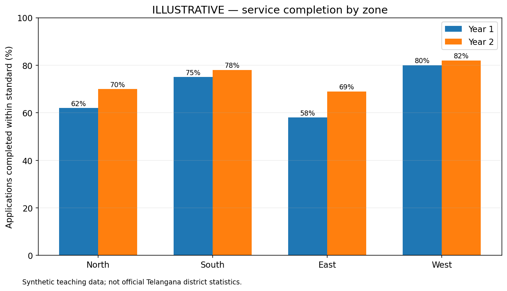
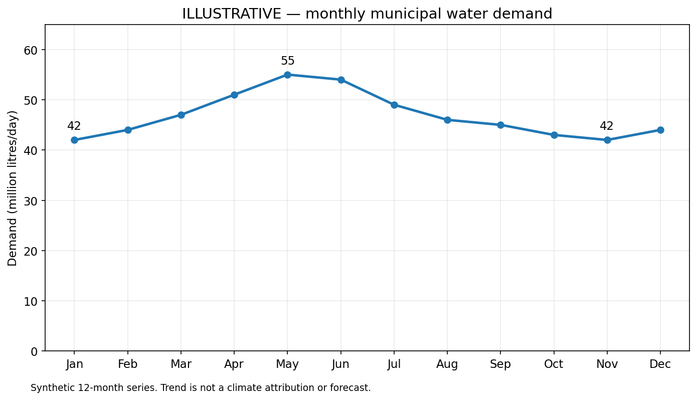
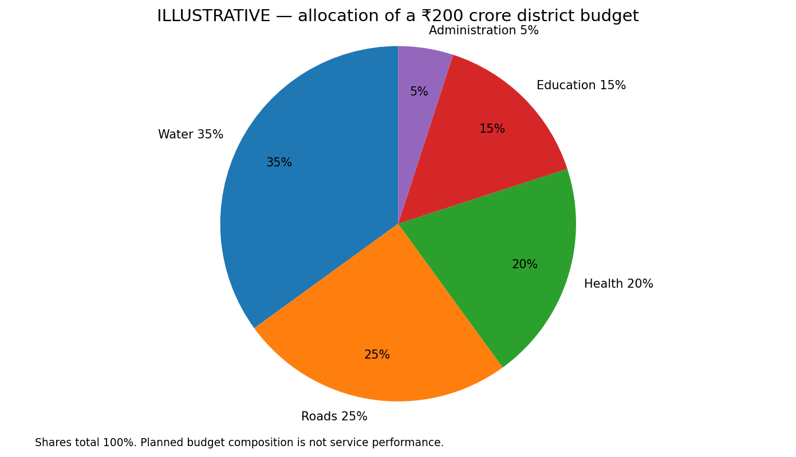

TGPSC Group I · Paper V · Unit III · Topic 1 · 24 October 2026 · Independent study draft · NOT academically approved
The original commission-hosted Notification No. 02/2024, dated 19 February 2024, Paper V, Unit III, item 1 states: “Data Analysis – Analytical Interpretation of statistical Data, Study of Graphs and Charts - Bar graphs, Line graphs and Pie- charts and drawing conclusions.” [S01]. The exact wording was found in the search-indexed text of the original notification on 24 October 2026; a direct re-open of the host returned a gateway error. The same wording appears in the commission-hosted Group I Scheme and Syllabus document [S02]. This is an independent study draft, not a TGPSC-approved publication.
| Syllabus component | Sections | Demonstrated skill |
|---|---|---|
| Analytical interpretation of statistical data | 1–7, 11–16 | Units, denominators, averages, variation, quality and inference |
| Study of bar graphs | 8, 18 | Category comparisons, grouped bars, scales and percentage points |
| Study of line graphs | 9, 15 | Trend, seasonality, rate of change and missing observations |
| Study of pie charts | 10, 15 | Shares, angles, budget composition and changing totals |
| Drawing valid conclusions | 12–18 | Correlation versus causation, limitations and policy action |
How to use this chapter: Read the 18 substantive sections, reproduce the three original worked diagrams and the integrative zone comparison, complete 30 explained original MCQs, then practise six structured mains answers. All numerical exercise datasets are explicitly illustrative and should not be cited as actual Telangana statistics.
Statistical interpretation begins with the question and the denominator, not the graph. Bars compare categories, lines show ordered changes and pies show composition of one total. Percentages, percentage points, weighted averages, dispersion and index numbers describe different aspects of data. Official statistical sources require scrutiny of definitions, base years, revisions and sampling uncertainty. Telangana applications in agriculture, water supply, health and urban governance demonstrate that the highest absolute count is not always the highest rate, and that an observed association is not necessarily causal. A sound conclusion states a measured finding, its comparison, a limitation and the next evidence or action required.
Concept and objective. Data are recorded observations; statistics are numerical descriptions or inferences built from observations; data analysis is the process of organising, checking and examining them; and interpretation explains what the results mean for a particular question. The difference matters in administration. A bar chart may establish that a district recorded more service requests than another district. It does not, without a population denominator and an examination of registration practices, establish that its residents faced greater service deprivation. Good interpretation is an argument in which every numerical claim can be traced to a defined measure, a calculation and a stated limitation.
A disciplined sequence. Begin with a decision question: for example, whether district health facilities are receiving supplies equitably. Identify the observational unit (facility, patient, village or district), the reference period, geographic coverage and variable definition. Check the source and how data were collected. Next inspect missing values, duplicate records, units, inconsistent categories and implausible extremes. Select a comparison that fits the question: levels, per-capita rates, changes, proportions or distribution. Calculate, visualise and then test alternative explanations. Finally write a conclusion with a numerical finding, the denominator, an uncertainty or caveat, and the administrative action that follows. A graph is evidence only after these steps.
Four different statements. Description says 'the reported total rose from 80 to 100'. Comparison says 'the increase was 25% relative to the starting total'. Inference says 'the population-level increase is plausible under the survey design and sampling uncertainty'. Causal explanation says 'the intervention caused the rise'. The fourth statement requires a credible counterfactual and cannot be read from two bars. A candidate who treats association as causation, or treats a sample estimate as an exact census count, loses analytical credibility even when the arithmetic is correct.
Telangana application. Imagine comparing registered applications for irrigation support in two mandals. One mandal reports 4,000 applications and another 2,500. The larger count could reflect more farmers, a different registration window or greater awareness. Compare eligible farmers, calculate applications per 1,000 eligible farmers, and verify whether both mandals used the same definitions. Disaggregate by landholding and gender where the source permits. This is an illustrative reasoning example, not an assertion about actual Telangana administrative totals. The method generalises to public health, school attendance, crop losses, water supply and urban services.
Exam takeaway. Never jump from a plotted difference to a policy verdict. State what is measured, how it was computed, what the comparison supports, and what it cannot prove.
Qualitative and quantitative. Qualitative variables classify observations: district, crop, service type or satisfaction category. Quantitative variables are counts or measurements. Discrete counts include the number of schools; continuous measurements include rainfall in millimetres, time in minutes and household expenditure in rupees. A category encoded as 1, 2 and 3 does not become quantitative merely because it uses numbers. A numerical identifier such as a school code is a label, not a magnitude. Treating such codes as quantities produces meaningless averages.
Measurement scales. Nominal categories have no inherent order (crop type). Ordinal categories have an order but not necessarily equal gaps (poor, fair, good). Interval scales have meaningful differences but an arbitrary zero (degrees Celsius); ratio scales have a meaningful zero and permit multiplication comparisons (litres, kilometres, rupees, counts). Thus 30 degrees Celsius is not 'twice as hot' as 15 degrees Celsius, while 30 litres is twice 15 litres. A pie chart is appropriate for exhaustive, mutually exclusive nominal categories of a single total, not for a collection of overlapping yes/no responses.
Cross-section, time series and panel. A cross-sectional dataset compares units at one period; a time series follows an indicator over successive periods; panel data follow the same units over time. A 2026 comparison of district literacy rates is cross-sectional; annual rainfall for Hyderabad over 15 years is a time series; repeated observations on the same villages constitute a panel. Time-series comparisons require stable definitions and attention to seasonality. Panel comparisons additionally face attrition when some units disappear from later waves. Mixing a 2025 numerator with a 2011 denominator can create an apparently precise but misleading rate.
Census, survey and administrative data. A census attempts full enumeration of a defined population. A sample survey estimates population features using a selection design; a representative sample is not simply a large sample. Administrative records are generated through services, registration and compliance and may omit those outside the programme. In the Indian statistical system, the National Statistical Office, state Directorates of Economics and Statistics, and the Reserve Bank of India publish different kinds of datasets. Each source has distinct coverage, definitions, revisions and release schedules. Source choice must follow the indicator, not the convenience of a chart.
Worked distinction. Suppose a school survey asks 100 parents to choose all reasons for absence: illness 45, transport 35, farm work 30. The counts sum to 110 because answers overlap. It is incorrect to draw a pie chart with slices 45%, 35%, 30% of 'all parents'. A bar chart of multiple-response counts is defensible, accompanied by a note that percentages may exceed 100 in total. If the question had required exactly one primary reason and included a 'none/other' category, a pie chart could represent shares of 100.
Why quality precedes statistics. An attractive chart can be built from invalid data. Accuracy asks whether a value matches reality; completeness asks whether expected observations exist; consistency checks definitions across files; timeliness asks whether the measurement is recent enough; uniqueness identifies duplicated records; validity asks whether values respect a permitted range; and comparability asks whether years and places use compatible methods. These dimensions should be assessed separately. A perfectly complete dataset can still be systematically biased if the unregistered population is absent.
Missingness is not zero. A blank rainfall record may mean no instrument reading, not zero rainfall. A dash in an official table may indicate 'not available', 'not applicable' or a suppressed estimate. The table footnote determines its meaning. Replacing every blank with zero lowers totals and means; deleting every incomplete record can bias the sample if missingness is associated with poverty, remoteness or service failure. In an examination, explicitly state the treatment of missing values. If the missing observation is material, calculate a range or mark the result indeterminate rather than fabricate it.
Outliers and revisions. A monthly vaccination count that is ten times the neighbouring months may be a backlog upload, a change in catchment area or a data-entry error. Check the underlying register before removing it. For official statistics, provisional, revised and final estimates are not interchangeable. A new base year or changed sampling frame can create a discontinuity that resembles growth. The 2026 revision of India's national-accounts series illustrates why comparing an older-base figure with a newer-base figure without a bridge or back series can mislead [S07]. Revisions are not automatically evidence of manipulation; they must be documented and evaluated.
Metadata checklist. Every graph used in a district note should carry: indicator name; unit; numerator and denominator; geography; period; source agency and publication; collection method; revision status; category definitions; missing-data convention; and any weighting. A rate labelled 'coverage 85%' is uninterpretable without knowing whether its denominator is households surveyed, eligible households or registered beneficiaries. The National Metadata Structure initiative is designed to improve the transparency and consistency of such information [S08].
Practical quality audit. Before plotting a table of school enrolment, check whether district boundaries changed, whether private schools are included, whether counts are for academic years or calendar years, and whether boys and girls are classified identically. Verify that component totals match the published overall total, allowing for rounding and 'not stated'. Record each correction; never silently rewrite an official figure to make a graph look smooth.
Level versus exposure. Absolute counts answer 'how many?'; rates and proportions answer 'relative to what population or opportunity?'. A district with 500 reported incidents may have a lower incident rate than one with 200 if its population is much larger. For a percentage, divide the part by the appropriate whole and multiply by 100. For a rate per 1,000, divide the event count by the population at risk and multiply by 1,000. The correct denominator depends on the question; total population is not always the population eligible for a service.
Illustrative example. District A has 120 complaints among 60,000 households; District B has 90 among 30,000. A's complaint rate is 120/60,000 × 1,000 = 2 per 1,000 households. B's is 90/30,000 × 1,000 = 3 per 1,000. A has more complaints in absolute terms but a lower rate. This reversal is not a contradiction: the two measures answer different questions. If complaints are underreported, neither rate is an exact measure of underlying harm.
Shares versus percentage points. If safe-water coverage moves from 60% to 72%, the increase is 12 percentage points and the relative increase is (72−60)/60 × 100 = 20%. Writing 'coverage increased by 12%' without specifying points or relative change is ambiguous. If a pie slice expands from 20% to 25% of a total, its share rose 5 points, but its absolute count may fall if the total contracted sharply. Distinguish the denominator of a percentage change from the denominator of a share.
Ratios and index numbers. A sex ratio or student–teacher ratio compares two quantities, often with a convention specifying the numerator. An index such as CPI measures relative change against a defined base; it is not the price of a single item. If an index rises from 120 to 126, the index-level increase is 6 points and the relative increase is 5%. Base-year rebasing changes the numerical scale and sometimes the basket or weights. A valid comparison requires harmonised series, not merely a subtraction.
Interpretive caution. Rates can be unstable with very small denominators. Ten events among 100 people give 10%; one extra event moves the rate to 11%, a full percentage point. A larger population provides more stable descriptive rates but does not eliminate undercounting, selection bias or changes in classification. Show both numerator and denominator when reporting small-area indicators.
Arithmetic mean. For n observations, the mean is their sum divided by n. It uses every value but is sensitive to extremes. For incomes 10, 12, 14, 16 and 98 (thousand rupees), the mean is 30, whereas four of five observations are below 20. A policy statement describing the 'typical household' solely through the mean would exaggerate the common experience. The median, the middle ordered observation, is 14; the mode is absent because no value repeats. The distinction between a descriptive average and an equitable outcome is substantive.
Weighted mean. When groups differ in size, the combined mean is the sum of each group's mean multiplied by its population, divided by the total population. Suppose 80 rural households have mean water use of 70 litres and 20 urban households have mean 110 litres. The combined mean is (80×70 + 20×110)/100 = 78 litres, not (70+110)/2 = 90 litres. The latter incorrectly gives a 20-household group the same weight as an 80-household group. Weighting is indispensable when aggregating district survey estimates with unequal sampling fractions.
Median and grouped observations. The median is resistant to a few extremely high values. For an even number of sorted observations it is the average of the two central values. For grouped continuous data, the conventional interpolation is Median = L + [(N/2−C)/f]×h, where L is the lower class boundary, C cumulative frequency before the median class, f frequency of the median class and h its width. This assumes roughly uniform distribution within the median class; it is an approximation, not a direct observation. When class widths differ, compare histograms using frequency density, not raw heights.
Mode. The mode identifies the most frequent value or category. It is particularly meaningful for nominal data, where a numerical mean is meaningless. A distribution can have multiple modes, as when demand clusters around two delivery sizes. For grouped data, the modal class is the class with the greatest frequency only when widths are equal; with unequal widths, use density to locate the tallest histogram bar. Report the interval and its boundaries rather than pretending the modal value is exact.
Exam use. Choose mean for additive resources or total workload; median for skewed incomes and waiting times; mode for the most common category. For public service evaluation, report at least one distributional measure alongside the average when extreme delays or unequal access matter.
Spread gives context. Two clinics may each have an average waiting time of 30 minutes, yet one serves nearly everyone within 25–35 minutes while the other alternates between 5 and 55 minutes. The mean alone conceals unequal experiences. The range is maximum minus minimum; interquartile range (IQR) is Q3−Q1; variance averages squared deviations (with population or sample denominator as appropriate); and standard deviation is the square root of variance. These quantities answer different questions. Range is extremely sensitive to a single outlier; IQR describes the middle half.
Coefficient of variation. For positive ratio-scale data with a meaningful nonzero mean, CV = standard deviation / mean × 100%. It helps compare relative dispersion when means differ substantially. It is not useful for variables with a mean close to zero or arbitrary interval scales. A standard deviation of 5 litres around a mean of 50 litres (CV 10%) signals different relative variability from 5 litres around 10 litres (CV 50%). Do not compare raw standard deviations across different units as if they were dimensionless.
Skew and percentiles. In a right-skewed distribution, a few large values pull the mean above the median; in a left-skewed distribution, low extremes can pull it below. Percentiles locate observations within an ordered distribution: the 90th percentile waiting time means roughly 90% of observed waits are at or below that threshold, subject to the percentile convention. It does not mean that 90% of total waiting time belongs to those patients. An average without its distribution can conceal disadvantaged pockets.
Simpson's paradox. An apparent overall trend may reverse after stratifying by a relevant variable. Suppose two districts each improve attendance within boys and girls, but the overall rate falls because the population composition shifts towards the subgroup with lower baseline attendance. The aggregated bar chart is arithmetically correct but narratively incomplete. Always examine changing weights, especially in time comparisons involving rural–urban shares, age structure or disease severity.
Telangana policy illustration. For a municipal water-supply dashboard, publish median supply hours and the lower-quartile experience, not just mean hours. If central localities enjoy 24-hour service while peripheral settlements receive intermittent supply, a citywide mean can conceal spatial exclusion. A ward-level line chart and an IQR are better suited to detecting inequity; a pie chart of citywide averages would not solve the problem.
Tables are precise but demanding. A table can display exact counts, totals and cross-classifications without the distortions of chart scales. Read its title, row and column headers, period, unit and footnotes before any calculation. Determine whether percentages are row percentages, column percentages or percentages of the grand total. A table of district × gender enrolment may contain three distinct sets of valid percentages, and a candidate who confuses them may derive the wrong comparison despite correct arithmetic.
Illustrative contingency table. Suppose a training programme enrolled 120 women and 80 men. Of these, 90 women and 64 men completed. Completion rates are 90/120 = 75% for women and 64/80 = 80% for men. Women's share of all completers is 90/(90+64) = 58.44%. These are different statements: women account for a majority of completions but have a lower within-group completion rate. Reporting the first alone would obscure the second. This distinction is vital in social-policy evaluation.
Cross-checks. Verify row totals, column totals and grand total; if totals do not match, check for rounding, unclassified observations, suppressed cells or multiple-response questions. Never add percentages that use different denominators. If a table reports revenue in lakh rupees and costs in crore rupees, first convert to common units: 100 lakh = 1 crore. Convert before computing differences or ratios. If dates are fiscal years, do not treat FY 2024–25 as calendar 2025 without explanation.
Grouped frequency tables. If observations are grouped into classes, frequencies must be nonnegative, classes must not overlap ambiguously, and cumulative frequencies must be monotonic. A frequency of 15 in the interval 20–30 is not 15 observations at the midpoint 25; the midpoint is a convenient approximation for grouped mean calculations. With open-ended classes such as '60 and above', exact class midpoint and variance cannot be determined without additional assumptions.
Exam discipline. Underline the requested quantity: total, average, ratio, difference, share or percentage change. Many errors come from answering a plausible but different question. Work with an intermediate table if needed, especially when the problem combines two charts with distinct units.
The basic logic. A bar graph encodes a category's magnitude by the length of a rectangle. Categories are discrete, so the bars should be separated. Use a common zero baseline when bar length represents magnitude; otherwise modest differences can look dramatic. A bar graph is not a histogram: in a histogram the horizontal axis is continuous intervals and the area, or frequency density for unequal class widths, represents frequency. This distinction is a frequent examination trap.
Variants. A simple bar chart compares one measure across categories. A grouped chart compares two or more series with a common unit and comparable definitions. A stacked chart shows component totals and composition; a 100% stacked chart shows proportions only, discarding absolute totals. When a category contains both positive and negative values, a diverging bar chart can show deviations from zero. For many districts, sorting bars by value often makes rank easier to read than alphabetical ordering. However, a sorted chart is unsuitable for representing chronology: use a line chart for temporal continuity.
Worked district comparison. In the original illustrative diagram, four Telangana-labelled administrative zones have service-completion percentages for two successive years: North 62→70, South 75→78, East 58→69 and West 80→82. East improves by 11 percentage points, the largest absolute gain; West has the highest latest level, 82%. The percentage relative improvement for East is (69−58)/58 × 100 = 18.97%. A correct conclusion must distinguish 'highest level' from 'greatest improvement'. Without denominators, these percentages cannot tell us which zone completed the most applications.
Scale and encoding errors. Starting a bar axis at 55% can make 58% and 82% look as different as 1 and 10. Using pictograms whose height and width both change can magnify area quadratically. A 3D bar chart introduces perspective and occlusion without analytical benefit. Multiple colour hues do not rescue a graph with mismatched units or an unexplained base. Always inspect the legend, category order, data labels, unit and axis origin.
Policy interpretation. If an official dashboard compares complaints across Hyderabad municipal circles, a large bar might reflect population, online access or reporting intensity. A second chart of complaints per 10,000 households, plus a service-resolution indicator, is more informative. A bar chart is a compact visual summary, not a substitute for denominator checks.
What a line represents. A line graph joins observations along an ordered, usually temporal, horizontal axis. It invites the reader to see continuity and direction between observations; therefore it is well suited to rainfall, prices, electricity demand or school attendance over time. A line chart is not automatically appropriate for unrelated categories such as districts: joining districts by a line can falsely imply an ordered continuum. Each plotted point must correspond to a defined time interval or instant.
Level, slope and volatility. A line rising from 100 to 120 in one month changes by 20 units, or 20% relative to its starting level. A rise from 200 to 220 also changes by 20 units but only 10%. Compare slopes only when horizontal time intervals and vertical units are comparable. A steep slope in a chart with a compressed time axis may be a formatting effect. Distinguish the peak level, the period of fastest change, the average over time and the direction of the longer-term trend.
Seasonality versus trend. A monthly water-demand series may peak in summer and fall during monsoon months. Connecting January to December and announcing a permanent fall ignores seasonality. A fair year-on-year comparison matches the same month or uses a seasonally adjusted series when an official method is available. A rolling average can smooth noise but lags turning points; disclose the window. A moving average of 3 months is not a forecast and cannot be used as evidence that the next 3 months will behave similarly.
Illustrative line calculation. A 12-month municipal demand series (million litres/day) is 42, 44, 47, 51, 55, 54, 49, 46, 45, 43, 42, 44. Peak demand occurs in May at 55, and the minimum occurs in January and November at 42. Peak-to-trough range is 13. From January to May the relative increase is (55−42)/42 × 100 = 30.95%. The series is illustrative, not an official Telangana demand series. It shows a seasonal pattern, not proof of climate causation or a validated long-term forecast.
Double axes and missing dates. Plotting two different variables with separate vertical axes can create a visual correlation by choosing scales. If dual axes are unavoidable, explain both and avoid causal claims. Missing months should appear as gaps unless there is a defensible imputation rule. Connecting across missing observations can falsely imply that the intervening path is known. Never infer a precise daily maximum from a monthly average.
Part-to-whole logic. A pie chart divides a single nonnegative total into mutually exclusive and collectively exhaustive categories. A slice's angle is its share × 360 degrees; its area conveys the same share. The total must be meaningful and defined. For the illustrative allocation of a district service budget—water 35%, roads 25%, health 20%, education 15%, administration 5%—the angles are 126°, 90°, 72°, 54° and 18°, summing to 360°. The diagram is a worked teaching dataset, not an actual budget.
Calculations. If the total illustrative budget is ₹200 crore, water is 0.35 × 200 = ₹70 crore; health is ₹40 crore; and water exceeds education by ₹40 crore. A slice angle of 72° represents 72/360 = 20% of the total. If a question gives an angle and total, convert angle to fraction first; do not assume the angle itself is a percentage. Pie charts are especially useful for straightforward questions of allocation, but a table or sorted bar chart is more accurate for close comparisons.
Denominator trap. A sector's share can decline even as its absolute allocation rises. If roads receive 25% of ₹200 crore in year 1 (₹50 crore) and 20% of ₹300 crore in year 2 (₹60 crore), the share falls by 5 percentage points while spending rises by ₹10 crore. Two pie charts without the totals can mislead a reader into thinking roads lost money. A valid comparison must state the changing total explicitly.
Inappropriate pies. Do not use pie charts for negative values, overlapping categories, several unrelated totals, or too many tiny categories. If a household can report both piped water and tanker supply, the categories overlap; a pie chart of those responses is invalid unless the survey defines a mutually exclusive primary source. For 20 districts, a ranked bar chart is usually easier to read. For composition over time, a stacked bar chart may be preferable, provided totals are also available.
Public administration use. Budget allocations, expenditure composition and land-use classes can be depicted as pies if classifications are consistent. But a budget pie shows planned shares, not effectiveness, quality or actual expenditure. To judge performance, connect the allocation to outputs and outcomes with denominators, baseline conditions and implementation evidence.
Absolute versus relative change. Absolute change is new minus old. Percentage change divides this difference by the old value. From 40 to 50, absolute change is 10 and percentage growth is 25%; from 50 to 40, the fall is 20%. A 25% rise followed by a 20% fall returns exactly to the original level: 40×1.25×0.80 = 40. It is incorrect to add the rates and conclude a 5% net rise. Percentage changes are multiplicative and their bases change.
Compound annual growth rate. For a positive beginning and ending value over n equal annual intervals, CAGR = [(end/start)^(1/n)−1]×100%. If enrolment rises from 1,000 to 1,210 over two years, CAGR = (1.21^0.5−1)×100 = 10% annually. CAGR describes a constant hypothetical growth rate connecting endpoints; it does not show that both observed annual rates were 10%. An intermediate dip or surge can produce the same CAGR.
Index-number logic. With a base index of 100, an index of 125 represents a 25% increase relative to that base under the index methodology. If a later index is 130, the percentage change since the previous reading of 125 is (130−125)/125 × 100 = 4%, not 5%. When official price indices are rebased, the base, item weights and collection methods may change. A chart joining the old and new index levels without a linking factor is analytically invalid. Consult the methodology and revision notice [S07, S10].
Deflation and real comparisons. Nominal spending can rise because prices rose, even if the real quantity of goods and services did not. A rough deflation divides a nominal index by a compatible price index and multiplies by 100, but sector-specific deflators and base compatibility matter. A district's nominal health spending rising 12% does not establish a 12% rise in real health services. The chart's y-axis must say whether values are current prices or constant prices.
Exam pitfalls. If the base is zero, ordinary percentage change is undefined; avoid dividing by zero. A fall from 5 to 2 is a 60% decline, not a 150% decline. Do not add a series of annual percentage changes to obtain the exact total growth unless using an explicitly stated approximation. Keep the base and period visible throughout the calculation.
Why a sample is not a census. Sample estimates vary because different valid samples could have been selected. Sampling design, stratification, clustering, nonresponse and survey weights affect both estimates and uncertainty. A 95% confidence interval is a procedure that, under repeated sampling and model assumptions, captures the fixed population parameter in 95% of applications; it is not a probability that a fixed realised interval 'contains the truth' in a Bayesian sense. The confidence level is not the proportion of respondents who are confident.
Margins of error and small groups. A headline sample of 10,000 people may include only 60 respondents from a small subgroup. A state-level estimate can be precise while a district- or subgroup-level estimate is highly uncertain. Cluster sampling can increase variance relative to a simple random sample. When comparing two percentages, overlapping intervals do not always settle a formal significance test, and nonoverlapping intervals are not required for significance. In the mains, say 'difference requires uncertainty assessment' rather than make a definitive inference from two bars.
Ecological fallacy. If districts with higher education levels have lower disease rates, one cannot conclude that every educated individual has a lower risk. District-level correlations describe groups and may reflect income, age structure, sanitation or healthcare access. Conversely, a population average can mask within-district inequalities. This is why administrative dashboards should offer disaggregation without disclosing sensitive personal information.
Illustrative sampling caution. Suppose 80% of respondents to an online portal poll report satisfaction. That percentage is not necessarily a representative estimate of all service users: people without internet access and those with strong complaints may respond differently. Weighting can address some known imbalances but not all unobserved selection mechanisms. A random sample of eligible households with documented response rates would better support population inference.
Institutional context. MoSPI publishes metadata on sample design and reliability measures for official surveys [S08]. An examination answer should separate the point estimate, its uncertainty and its scope. When uncertainty cannot be calculated from the supplied graph, do not invent it. State the limitation and interpret the displayed numbers descriptively.
Association is not an intervention effect. A scatterplot can reveal that two variables move together, but correlation does not establish a causal pathway. Rainfall and agricultural output may be positively associated, yet irrigation, crop mix, soil quality and input use also influence output. A time trend that rises after a scheme launch is compatible with the scheme working, but it is also compatible with broader economic change, altered reporting or pre-existing momentum.
Confounding and reverse causality. If high-performing schools receive more digital equipment, a positive association between equipment and examination results may arise because administrators allocate resources to already successful schools. Alternatively, equipment could improve outcomes. The graph alone cannot distinguish these explanations. Reverse causality occurs when an outcome influences the proposed cause, such as greater disease incidence prompting more testing, which in turn raises recorded cases.
Better evaluation designs. Random assignment, when ethical and feasible, supports causal inference. Otherwise, matched comparisons, difference-in-differences with credible parallel trends, regression discontinuity or carefully justified interrupted time-series analysis can strengthen evidence. Each has assumptions and risks. A mains answer on data interpretation need not derive these methods mathematically, but it should recognise why descriptive charts are insufficient for causal conclusions.
Chart manipulation. Cherry-picked start dates can exaggerate or hide trends. A truncated y-axis in a line graph may sometimes be useful for showing small fluctuations, but it must be labelled and not misrepresented as a bar-length comparison. Changing categories between periods, suppressing adverse subgroups and presenting nominal values as real are subtler distortions than a visibly misleading axis.
Telangana application. A municipal corporation may see a fall in reported flooding complaints after a drainage project. Before crediting the project, examine rainfall intensity, affected population, complaint-channel changes and comparable localities. The chart supports a hypothesis, not a verified attribution. The correct administrative conclusion is to triangulate rainfall, inundation maps, field inspection and citizen reports before expanding the intervention.
Data producers and custodians. The National Statistical Office under MoSPI compiles major national statistical series; the Reserve Bank of India publishes monetary, financial and state-comparison tables; the Census of India covers population enumeration; and state statistical departments publish state-level indicators. These are not interchangeable repositories. The indicator definition and reference period determine the right source. The same label, such as 'employment rate', can hide different age groups, reference periods and survey concepts.
MoSPI's eSankhyiki. The government launched the eSankhyiki portal on 29 June 2024 to improve access to official statistical datasets and visualisations [S03]. Its catalogue supports downloadable tables and graphs. A responsible analyst still reads metadata, because a portal chart can aggregate categories, update series or change defaults. Downloading a chart image without the underlying units and source information is inadequate for a government note or a rigorous mains answer.
Data governance and the release calendar. MoSPI publishes an advance release calendar for major statistical outputs [S04]. Release schedules help distinguish the newest available observation from the newest webpage update. The National Metadata Structure initiative, highlighted in a government release on 26 September 2025, emphasises standardised metadata and interoperability [S08]. These changes make it easier to locate data; they do not eliminate sampling error or guarantee causal conclusions. Always record the retrieval date and the reference period separately.
State evidence. The Telangana government's Socio Economic Outlook 2026 is an official source for state-sector indicators [S05]. RBI's state handbook provides a comparative cross-state framework [S06]. When combining them, check whether the GSDP series uses the same base year, whether the estimates are provisional or revised, and whether population denominators match. A comparison of 'Telangana grew faster than India' requires consistent price basis and comparable years, not just two attractive percentages from different pages.
Privacy and responsible release. Aggregate public data can support transparent analysis, but unit-level survey records may require access controls and anonymisation. MoSPI's 2026 statistical-data dissemination guidance distinguishes open, registered and restricted categories [S11]. The Digital Personal Data Protection framework is relevant when identifiable personal data are processed [S12]. Do not publish a village-level chart so granular that it reveals an individual beneficiary, and do not confuse public access to an aggregate table with permission to disclose raw records.
Agriculture. A district agriculture officer may compare cropped area, irrigation coverage, yield and procurement. These indicators have different units: hectares, percentage of cropped area, kilograms per hectare and tonnes. A rise in procurement tonnage can reflect a larger cultivated area rather than higher yield. A grouped bar chart of yields for two years can compare crops only when their units and reference seasons match. A line chart of monthly market prices may show seasonality, while a pie chart of crop-area composition shows allocation of land, not productivity. A good conclusion identifies which indicator answers the policy question.
Rainfall and water stress. Monthly rainfall is a flow measured over an interval, not a stock. A line chart of monthly totals can show monsoon concentration; a cumulative rainfall line chart should not decrease if constructed correctly from nonnegative daily totals. District rainfall comparisons need an area and period definition; point observations at one station are not automatically representative of an entire district. For drought management, compare observed rainfall with a relevant climatological baseline, reservoir storage and groundwater conditions. A single wet month cannot establish annual water security.
Public health. A hospital bar chart of outpatient visits by month can reflect demand, staffing, holidays or record digitisation. A district with a higher number of tuberculosis notifications may have stronger case detection, not necessarily higher underlying incidence. A line graph of test positivity must show the denominator of tests performed and changes in testing criteria. A pie chart of disease categories is valid only if the categories are mutually exclusive. Data visualisation can guide investigation; it should not stigmatise communities or be used to disclose patient-level identities.
Urban services. Hyderabad ward dashboards can compare waste collection, streetlight repair, pothole closure or water supply. Define whether the indicator is complaints received, complaints closed, median closure time or repeat complaints. A rise in recorded complaints after a mobile-app launch may signal easier reporting. Compare per-capita rates and service standards, and separate completed work from citizen satisfaction. A pie chart of expenditure allocation should not be described as an outcome chart. Maps are useful for spatial clusters but must be interpreted alongside ward populations and infrastructure exposure.
Three-part answer method. For each Telangana case: (i) define the outcome and its denominator, (ii) select an appropriate chart and calculate the comparison, and (iii) give one defensible conclusion plus one limitation. This structure is more valuable than memorising arbitrary numbers that may be revised.
Honest visual design. Use legible labels, comparable scales and consistent units. Put source, period and revision status near the chart. Avoid decorative 3D effects and selective omission of inconvenient categories. Use an appropriate number of decimal places: 72.3482% is usually false precision when the input was rounded to whole persons or estimated from a small sample. A chart should not imply more measurement certainty than the data possess.
Accessible communication. Do not rely on colour alone to distinguish series. Use markers, direct labels or patterns and maintain adequate contrast. For a printed examination answer, a clearly titled pencil graph with labelled axes is better than a colourful but unlabelled sketch. For a public dashboard, provide a data table or text summary so that readers who cannot interpret the graphic can still obtain the exact values. Pie charts with many small slices are particularly difficult for people with visual impairments.
Reproducibility. A trustworthy chart should be reproducible from its source table and stated transformations. Record filters, groupings, missing-data treatment, rounding, units and formulas. If a dataset was downloaded on a particular date, note that date; public datasets may be revised. When the source is a government PDF, check whether a subsequent revised estimate or erratum superseded it. If you cannot recreate the chart from the numbers, the figure is not yet audit-ready.
Contrasting approaches. A simple bar graph communicates rank quickly but can conceal distribution. A table preserves precision but is slower to scan. A line chart highlights a trend but may tempt readers to assume smooth changes between observations. A pie chart gives intuitive composition but is poor for comparing small differences. No chart type is inherently superior; choose the one that makes the target inference easiest without hiding a relevant qualification.
A useful final checklist. Can a reader identify the indicator, unit, geography and period? Does the visual use an honest scale? Are totals and component shares internally consistent? Is the denominator stable? Are comparisons like-for-like? Are uncertainty and revisions visible? Does the conclusion stay within the evidence? Answering these questions transforms graph reading from mechanical calculation into responsible administrative analysis.
Step 1: Decode the question. Identify whether it asks for the maximum, minimum, difference, percentage, average, share, rank, trend or defensible conclusion. Circle qualifiers such as 'approximately', 'compared with the previous year', 'of total' and 'per household'. These words specify the denominator and precision. A frequent trap is to calculate a percentage increase when the question asks for a percentage-point difference.
Step 2: Decode the display. Read the chart title, legend, horizontal and vertical axes, units, year, source and notes. For bars, check zero baseline; for lines, check time intervals and missing points; for pies, identify the total and confirm that the shares sum to 100%. If a table contains 'in thousands', multiply or divide only after confirming the required output unit. Do not perform arithmetic on a graph that you have not understood.
Step 3: Choose the operation. Difference = larger−smaller. Relative change = difference/base × 100. Share = part/whole × 100. Weighted mean = sum(weight×value)/sum(weights). Pie angle = share×360°. For multi-stage growth, multiply growth factors. If two charts have different bases, convert them to common units or state why direct comparison is invalid. Write one short equation before substituting numbers to reduce careless mistakes.
Step 4: Check plausibility. A share should lie between 0% and 100% for an ordinary nonnegative part-to-whole table. Pie angles must total 360°. An average must lie between the smallest and largest observed values when all weights are nonnegative. A claimed 150% decrease from a positive number is generally a warning sign. If a percentage has the wrong direction, check whether the old and new values were reversed.
Step 5: State a bounded conclusion. A correct answer distinguishes 'the graph shows' from 'the graph suggests' and 'further data would be needed'. In a descriptive mains question, write one numerical comparison and one methodological limitation. In a problem-solving question, show working and units. Avoid speculation about causes not represented by the data.
Step 6: Allocate time. Solve exact-reading and one-step arithmetic items first. For a long case, create a compact scratch table of key values and denominators. Leave difficult interpolation or compound-growth calculations until simpler marks are secured. Reserve the final seconds to verify the requested unit and whether the answer is a percentage or percentage points.
Illustrative administrative dataset. Four zones report applications completed within the service standard: North 62% in year 1 and 70% in year 2; South 75%→78%; East 58%→69%; West 80%→82%. A grouped bar graph identifies East as the greatest absolute improver (11 percentage points), West as the latest leader (82%), and East as still below the latest four-zone simple mean of (70+78+69+82)/4 = 74.75%. These percentages are deliberately synthetic teaching data, not official records.
Weighted interpretation. Suppose the zones have 1,000, 2,000, 500 and 1,500 eligible applications in year 2. The weighted overall completion rate is (0.70×1,000 + 0.78×2,000 + 0.69×500 + 0.82×1,500)/5,000 = (700+1,560+345+1,230)/5,000 = 76.7%. The simple mean of 74.75% is not the overall applicant-level rate. This distinction matters for district reporting and demonstrates why published dashboards should disclose counts as well as percentages.
Alternative explanation. A higher completion rate could result from faster processing, fewer complex applications, altered eligibility rules or selective registration. Before ranking administrators, inspect service categories, backlog age, rejection rates and audit samples. A zone could appear to improve by excluding difficult cases from its denominator. Conversely, a zone expanding access to marginalised residents could see its rate temporarily fall even as public service improves.
Decision framework. First validate the denominator and time windows. Second disaggregate by service type, geography and vulnerable groups. Third compare both level and improvement with uncertainty and case complexity. Fourth investigate East's remaining gap and West's practices without presuming they are transferable. Fifth publish a transparent, accessible dashboard with the underlying table. This method joins statistical calculation with fairness, accountability and administrative feasibility.
Conclusion. The correct interpretation is not 'West is best, East is worst'. The supported statements are: West has the highest displayed latest rate; East has the largest displayed percentage-point improvement; and the weighted aggregate is 76.7% under the stipulated application counts. Determining service quality and causation requires further evidence. Such qualified conclusions are the essence of Paper V Unit III Topic 1.

Four illustrative zones (North, South, East, West) show two years of percentages. The zero baseline preserves relative magnitude. East has the greatest absolute gain, +11 percentage points, while West has the highest latest rate, 82%. Percentages do not establish the number of completed applications without denominators.

Twelve observations are ordered January–December. May is the peak at 55 million litres/day, and January and November are minima at 42. This is a synthetic seasonal teaching series; the line does not establish causation or predict a future year.

The five mutually exclusive shares total 100%: water 35%, roads 25%, health 20%, education 15%, administration 5%. For an illustrative ₹200 crore total, water equals ₹70 crore and education ₹30 crore. A pie compares shares of one total, not outcomes or spending efficiency.
1. Identify the data. Nominal: labels such as district or crop. Ordinal: ranked categories. Discrete: counts. Continuous: measured values. Cross-section: units in one period. Time series: successive periods. Panel: same units observed repeatedly. Survey estimates and administrative counts have different coverage and uncertainty.
2. Read before calculating. Inspect title, period, geographic scope, source, units, denominator, legend, axis baseline, category definition, footnotes, missing values and revision status. A blank is not automatically zero. A table's percentages may be row-wise, column-wise or of the grand total.
3. Core formulas. Percentage = part/whole × 100. Rate per 1,000 = events/population at risk × 1,000. Absolute change = new−old. Relative change = (new−old)/old × 100. Percentage-point change = new percentage−old percentage. Pie angle = share × 360°. Weighted mean = sum(weight×value)/sum(weights). CAGR = [(end/start)^(1/n)−1] × 100. CV = SD/mean × 100 where appropriate.
4. Central tendency and spread. Mean uses all values but is outlier-sensitive. Median is the middle ordered value and is robust to extreme values. Mode is the most common value or category. Range = max−min; IQR = Q3−Q1; SD measures dispersion around the mean. Averages can hide inequality, so check the distribution and subgroups.
5. Graph selection. Bar = discrete categories and comparison; grouped bar = categories across series; stacked bar = composition and total; line = ordered time trend; pie = mutually exclusive shares of one total; table = exact values. Histograms differ from bar charts: adjacent intervals represent continuous variables, and unequal widths require frequency density.
6. Bar-chart traps. A truncated baseline can exaggerate magnitude. A large absolute count need not imply a large rate. The category with the highest current value may differ from the one with the largest improvement. Grouped series require comparable units and definitions.
7. Line-chart traps. Check equal time intervals, missing months, seasonality, changes in measurement, dual axes and baseline. A rising line shows observed increase, not necessarily a permanent trend or causal effect. A rolling average smooths but delays turning points.
8. Pie-chart traps. Slices must be nonnegative, mutually exclusive and exhaustive. Angles total 360°. A declining share can correspond to an increasing absolute amount when the total grows. Overlapping responses cannot form a valid pie.
9. India and Telangana data. MoSPI/NSO publish national official statistics; eSankhyiki supports data access and visualisation; RBI publishes comparable state tables; Telangana Socio Economic Outlook supplies state indicators. Confirm the latest reference period, not just website update date. National Metadata Structure documents definitions; revised base years demand caution.
10. Six exam-ready caution lines. (a) 'The chart reports an association, not a demonstrated cause.' (b) 'Rates require a comparable denominator.' (c) 'The mean conceals distributional differences.' (d) 'The series may have changed definition or base year.' (e) 'Sampling uncertainty and nonresponse were not supplied.' (f) 'The finding warrants disaggregated verification before policy attribution.'
11. Mental arithmetic. From 60% to 72% = +12 percentage points = +20% relative. A 25% rise followed by a 20% fall returns to base. 72° in a pie = 20%; 54° = 15%; 90° = 25%. An index from 125 to 130 rises 4%, not 5%. One crore = 100 lakh.
12. Final 30-second check. Does the answer have the requested unit? Is the base the old value? Does the conclusion match the displayed data? Have you confused a district-level pattern with an individual claim? If the question says 'draw a conclusion', give a number, a comparison and one limitation.
Provenance notice: These are newly written practice questions, not authenticated TGPSC previous-year questions. Numerical datasets are invented for teaching unless an official source is explicitly named.
Q01. A district recorded 150 complaints among 50,000 households. Complaints per 1,000 households are: A. 0.3; B. 3; C. 30; D. 300. Answer: B (3). Divide 150 by 50,000 and multiply by 1,000. The numerator is complaints, not necessarily distinct households; a true household incidence rate would require unique affected households. The correct unit is complaints per 1,000 households.
Q02. A service's coverage rises from 64% to 80%. Which statement is correct? A. Up 16% relatively; B. Up 25 percentage points; C. Up 16 percentage points and 25% relatively; D. Up 80%. Answer: C. Absolute change in percentages is 80−64 = 16 points. Relative increase is 16/64 ×100 = 25%. Confusing percentage points with relative percentage is a common error.
Q03. Which graph best compares the numbers of applications in five unrelated districts for a single month? A. Line graph; B. Simple bar graph; C. Pie of overlapping reasons; D. Time-series curve. Answer: B. Districts are nominal categories and bar length permits comparison of magnitudes. A line between districts would imply an arbitrary ordering and continuity; a pie is appropriate only if the five numbers exhaust one meaningful total.
Q04. Which variable is nominal despite its numeric representation? A. Rainfall in mm; B. Road length in km; C. Village code 5032; D. Waiting time in minutes. Answer: C. The code is an identifier; subtraction or averaging of codes has no substantive meaning. Rainfall, length and time have ratio-scale interpretations with meaningful zeros.
Q05. The mean of 8, 10, 12, 14 and 56 is: A. 12; B. 16; C. 20; D. 56. Answer: C (20). Sum is 100 and n=5, so mean=20. The median is 12, revealing the influence of the high observation. A responsible interpretation of 'typical' should consider this skew.
Q06. A programme has 30 beneficiaries with mean benefit ₹2,000 and 70 with mean ₹1,000. The overall mean is: A. ₹1,300; B. ₹1,500; C. ₹1,700; D. ₹3,000. Answer: A. Weighted mean = (30×2,000 + 70×1,000)/100 = ₹1,300. Averaging the two group means equally would misrepresent the unequal group sizes.
Q07. A budget pie shows 25% for education. Its central angle is: A. 25°; B. 45°; C. 90°; D. 120°. Answer: C (90°). Multiply the share 0.25 by 360°. The numerical percentage is not the angle. The pie is valid only if categories partition one total without overlap.
Q08. In a ₹240 crore budget, a 15% slice equals: A. ₹16 crore; B. ₹24 crore; C. ₹36 crore; D. ₹60 crore. Answer: C. 0.15×240=36. If the total budget changed, the same percentage would correspond to a different rupee allocation.
Q09. A count rises from 200 to 250, then falls by 20%. Final count is: A. 180; B. 200; C. 220; D. 230. Answer: B. 250×0.8=200. The first rise was 25% and the later fall 20%, but the bases differ. Do not add the percentages to infer net growth.
Q10. A bar chart has a y-axis beginning at 90 rather than zero. Which concern is strongest? A. All values become wrong; B. The graphic may exaggerate small differences in magnitude; C. Time intervals disappear; D. Percentages must sum to 360. Answer: B. The values can be numerically correct, yet bar lengths no longer provide an honest zero-based comparison. This is a visual-encoding problem, not necessarily a data-entry error.
Q11. A monthly line chart has a gap for July. The safest representation is: A. Insert zero; B. Draw a straight line and call it observed; C. Show a missing interval or clearly documented imputation; D. Remove all other months. Answer: C. Missing does not mean zero, and a connecting segment may imply unobserved values. Imputation requires a justified method and explicit labelling.
Q12. A district's recorded cases rise after testing expands. The graph alone proves: A. Disease transmission rose; B. Testing caused disease; C. Recorded notifications rose; D. The new policy failed. Answer: C. More testing can identify previously missed cases. To assess underlying incidence, examine positivity, testing criteria, population at risk and independent surveillance indicators.
Q13. A survey allows respondents to select multiple reasons. Which display is generally most defensible? A. Pie with total 130%; B. Bar chart of each reason with a multiple-response note; C. Pie with negative slices; D. Line joining unrelated reasons. Answer: B. Categories overlap, so their percentages need not sum to 100. A bar chart shows response frequency without falsely implying a partition.
Q14. A price index moves from 125 to 130. Percentage increase relative to the earlier index is: A. 4%; B. 5%; C. 25%; D. 30%. Answer: A. (130−125)/125×100 = 4%. Five is the index-point difference, not the relative percentage change.
Q15. Which conclusion follows from a positive correlation between district income and school completion? A. Income necessarily causes completion; B. Completion necessarily causes income; C. They are associated at district level; D. Every high-income individual completes school. Answer: C. Group-level association is not individual-level causation. Confounding, reverse causality and ecological fallacy remain possible.
Q16. Two wards each average 30 minutes of waiting. Which additional statistic most directly reveals unequal experiences? A. Ward code; B. Interquartile range; C. District name; D. Pie angle. Answer: B. IQR measures the spread of the middle half and complements the mean. Equal means do not imply equal variability or fairness.
Q17. A pie slice shrinks from 30% of ₹100 crore to 25% of ₹160 crore. Allocation: A. Falls ₹5 crore; B. Unchanged; C. Rises ₹10 crore; D. Rises ₹25 crore. Answer: C. Old allocation ₹30 crore; new ₹40 crore. Share decreases by 5 percentage points while absolute amount rises by ₹10 crore.
Q18. An enrolment index rises from 1,000 to 1,210 over two years. CAGR is: A. 5%; B. 10%; C. 11%; D. 21%. Answer: B. Square root of 1.21 is 1.10, so constant equivalent annual growth is 10%. CAGR does not reveal the actual intervening yearly rates.
Q19. In a bar graph of four zones, latest rates are 70%, 78%, 69%, 82%. Their unweighted mean is: A. 74.75%; B. 76.7%; C. 78%; D. 82%. Answer: A. Sum 299 divided by 4 = 74.75. An applicant-weighted overall rate can differ if zone denominators are unequal.
Q20. An interval '40–50' in a grouped table contains frequency 18. For a midpoint-based approximation, use: A. 18; B. 40; C. 45; D. 50. Answer: C. Midpoint is (40+50)/2=45. It is a representative value for approximate grouped calculations, not a claim that all 18 observations equal 45.
Q21. A histogram has unequal class widths. To compare bar heights correctly, use: A. Raw frequency only; B. Frequency divided by class width; C. Cumulative frequency times width; D. Median only. Answer: B. Frequency density ensures each rectangle's area represents frequency. Otherwise a wide interval may look disproportionately prominent.
Q22. A graph of monthly rainfall has one unusually large value. Which first action is best? A. Delete it to smooth the curve; B. Replace it with the mean; C. Check instrument, date, location and source records; D. Claim climate change. Answer: C. An extreme may be real or erroneous. Validation precedes exclusion and interpretation; a single event cannot by itself establish a climate trend.
Q23. Which pair is essential when comparing tuberculosis notifications between two districts? A. District names only; B. Case counts and population at risk, with detection context; C. Pie colours; D. One photograph per district. Answer: B. Rates require denominators, and notification intensity depends on testing and reporting. Higher notifications are not automatically higher true incidence.
Q24. A line chart connects four unrelated crop categories in alphabetical order. Main defect: A. Its values must be negative; B. It suggests continuity across nominal categories; C. It cannot show percentages; D. It requires a 3D axis. Answer: B. Use a bar chart to compare unrelated categories. Lines imply an ordered sequence with meaningful adjacency.
Q25. A table gives 'lakh rupees' and another 'crore rupees'. Correct conversion is: A. 1 crore = 10 lakh; B. 1 crore = 100 lakh; C. 1 lakh = 100 crore; D. 1 crore = 1,000 lakh. Answer: B. One crore is 10 million rupees and one lakh is 100,000, so 1 crore = 100 lakh. Units must be standardised before comparing amounts.
Q26. A service poll obtains 90% satisfaction from app users only. The safest inference is: A. Exactly 90% of all residents are satisfied; B. All nonusers are dissatisfied; C. 90% of responding app users reported satisfaction; D. The service caused satisfaction. Answer: C. The sample excludes residents who cannot or do not use the app and may suffer response bias. A population estimate requires a suitable sampling design.
Q27. If a category's pie angle is 54°, its share is: A. 10%; B. 15%; C. 20%; D. 54%. Answer: B. 54/360×100 = 15%. Always check that all angles sum to 360°.
Q28. A district reports 90 completions among 120 women and 64 among 80 men. Which statement is correct? A. Women's completion rate is 80%; B. Men's completion rate is 75%; C. Women's rate is 75%, men's 80%; D. Rates cannot be computed. Answer: C. 90/120 = 75% and 64/80 = 80%. Women's share of all completions is a different statistic and must not be substituted for their within-group rate.
Q29. What is the main reason to consult the official metadata before comparing two years of GDP? A. To choose a more attractive colour; B. To check base year, prices, definitions and revision status; C. To remove all footnotes; D. To convert the chart into a pie. Answer: B. Revisions, rebasing and changing coverage can break direct comparability. The correct numerical operation depends on harmonised definitions.
Q30. Which is the strongest defensible conclusion from a chart showing that East improved 58%→69% and West 80%→82%? A. East has the highest latest level; B. West improved most in percentage points; C. East improved 11 points, West has the higher latest level; D. East's policy caused a statewide improvement. Answer: C. East gained 11 percentage points; West gained 2 and reached 82%. Causal attribution and statewide extrapolation are not supported by the chart alone.
Each blueprint is followed by a complete 200–250-word model answer in the preceding section. These are original practice answers, not attributed to any official TGPSC paper.
Introduction. Statistical charts turn a large table into a visual argument, but each chart answers a different kind of question. A responsible administrator chooses the display from the structure of the data and the decision to be made, rather than choosing the most attractive graphic.
Bar graphs and comparison. Bars compare distinct categories such as districts, service types or crop groups. A grouped bar chart can show two-year changes. For example, illustrative completion rates of 58% and 69% for one zone indicate an improvement of 11 percentage points. The bar scale should ordinarily begin at zero; otherwise small differences can look excessive. Raw complaint counts also need population denominators before equity judgments.
Line graphs and change. Lines show observations over ordered time intervals. They reveal trends, seasonality and turning points in rainfall, prices or service demand. A summer peak in water demand is not proof of a permanent upward trend. Missing months, unequal intervals and dual vertical axes require caution.
Pie charts and composition. Pies show mutually exclusive shares of one defined total. A 25% budget slice corresponds to 90 degrees. If the total budget changes, a smaller slice can still represent a larger rupee allocation. Overlapping categories make a pie invalid.
Governance and conclusion. Every chart should state source, unit, reference period, denominator and revision status. Officials should cross-check tables, disaggregate vulnerable groups and distinguish correlation from causation. Graphs can direct attention and improve accountability, but policy conclusions need validated data and contextual evidence.
Introduction. Development comparisons are frequently distorted by using absolute counts where rates are required or by treating an average as the experience of every resident. Denominators, appropriate measures of central tendency and measures of dispersion jointly make indicators meaningful.
Denominator discipline. Suppose District A has 120 complaints among 60,000 households while District B has 90 among 30,000. The respective rates are 2 and 3 complaints per 1,000 households. A has more complaints but a lower reported rate. The denominator must reflect the population exposed or eligible; changes in registration and reporting should also be considered.
Choice of average. The arithmetic mean suits aggregate workloads, but a skewed waiting-time or income distribution may be better represented by its median. Combining group means requires weights. If 80 households average 70 litres and 20 average 110 litres, the overall mean is 78 litres, not 90 litres. A simple average of group averages would give the smaller group excessive influence.
Dispersion and equity. Range, interquartile range and percentiles reveal whether an apparently good average conceals severe deprivation. A citywide mean water-supply duration can hide peripheral settlements receiving very little service. Ward-level distributions and lower-quartile values can identify neglected groups.
Conclusion. Telangana dashboards should publish counts with denominators, state the reference period, choose means or medians appropriately, and disaggregate by geography and vulnerability. Accurate arithmetic is necessary; transparent definitions and equity-sensitive interpretation are equally important.
Introduction. Official status does not exempt a dataset from interpretation errors. Graphs are only as reliable as their definitions, collection process, revisions and visual design. A careful reader should audit these features before drawing policy conclusions.
Source and scope. First identify the issuing agency, period, geographic coverage and observational unit. A household survey estimate is not a census count; a registration database may exclude people who never applied. Check whether the indicator uses current or constant prices, and whether the numerator and denominator refer to the same population and time.
Data quality. Examine missing observations, duplicate records, unusual values, nonresponse, suppressed cells and category changes. A blank should not automatically become zero. Revisions and base-year changes must be documented. A new GDP series, for example, cannot be joined mechanically to an older series without methodological guidance or a comparable back series.
Graph checks. Read the title, units, axes and legend. Bars representing magnitude generally require a zero baseline; lines require meaningful time ordering; pies require mutually exclusive categories summing to one total. Verify percentages, component totals and the requested denominator independently.
Interpretation and ethics. Separate description from causation. A rise in disease notifications after expanded testing may reflect improved detection. Consider uncertainty in sample estimates, subgroup composition and privacy when displaying granular records.
Conclusion. The sound sequence is source verification, metadata review, arithmetic cross-check, visual audit and qualified conclusion. Such discipline converts a dashboard from a persuasive picture into accountable public evidence.
Introduction. Many statistical errors arise because a number is compared with the wrong base. Percentage points describe the difference between two percentages; relative percentage change describes the difference divided by the starting value; compound growth accounts for successive changing bases.
Percentage points. If safe-water coverage rises from 60% to 72%, the absolute improvement is 12 percentage points. This is useful for describing how much of the eligible population gained coverage, provided the denominator and eligibility rules stayed comparable.
Relative change. The same movement represents (72−60)/60 × 100 = 20% relative growth. Saying simply 'up 12%' is ambiguous. If reported complaints rise from 80 to 100, their relative increase is 25%, but a change in reporting access could explain part of the movement.
Compounding. A 25% rise followed by a 20% decline returns a quantity to its starting value: 100×1.25×0.80 = 100. Growth rates cannot be added when their bases change. Over several years, compound annual growth rate expresses the constant hypothetical annual rate connecting two endpoints; it does not describe each intervening year.
Indices and limitations. A price index rising from 125 to 130 increases 5 index points but 4% relative to 125. Rebasing can change the index scale, basket and weights. Comparisons must use compatible methodology.
Conclusion. In examinations and administrative notes, write the formula, identify the base, preserve units and specify 'percentage points' or 'relative percentage'. This simple discipline prevents large policy misinterpretations.
Introduction. Telangana administration generates data on crops, rainfall, public health and municipal services. Interpreted carefully, such evidence can identify priorities and assess implementation; interpreted carelessly, it can stigmatise districts or reward changes in reporting rather than real improvement.
Agriculture and rainfall. Crop area, yield and procurement must be separated. Procurement tonnage can rise because cultivation expanded even when yield per hectare did not. Bar graphs compare crop or district outcomes; line graphs reveal seasonal rainfall or market-price patterns. A rainfall station's measurement should not be assumed to represent an entire district without spatial evidence.
Urban services. Municipal dashboards can track complaints received, resolved, repeated and pending. A higher complaint count may indicate a larger population or easier digital access. Publish rates per household, median closure times and ward-level distributions. A pie chart of expenditure shares describes allocation, not actual service quality.
Evidence checks. Use the Telangana Socio Economic Outlook and the state's statistical department for definitions, and consult relevant national statistical series when comparing states. Check base years, revised estimates, missing records and subgroup coverage. Display uncertainty where survey estimates are used.
Administrative safeguards. Combine quantitative charts with field verification, citizen feedback and transparent grievance procedures. Protect personal data and avoid revealing small groups through overly granular publication. Compare both service level and improvement, rather than ranking districts on one isolated metric.
Conclusion. Data interpretation should support targeted action and accountable follow-up, not simplistic league tables. Its value lies in clear denominators, contextual explanation and testable administrative decisions.
Introduction. A graph can accurately depict an association while supporting an inaccurate explanation. Causal attribution and equity assessment require more than a visible trend or a favourable average.
Limits of association. Suppose a district's disease notifications rise after a new testing programme begins. The graph proves that recorded notifications rose, but not necessarily that underlying disease incidence increased. Testing volume, case definitions and reporting compliance may have changed. Similarly, a decline in flood complaints after drainage works may coincide with lighter rainfall.
Confounding and selection. Income, infrastructure, geography and demographic composition can affect both an intervention and an outcome. An online satisfaction survey excludes residents without access and may overstate or understate satisfaction. District-level associations cannot automatically be applied to individuals, an error known as the ecological fallacy.
Equity hidden by averages. A city can report an average water-supply duration of 12 hours while some wards receive 24 hours and others receive almost none. Means should be complemented by medians, percentiles, ward-level rates and vulnerable-group disaggregation. A pie chart of budget shares does not establish who benefited.
Stronger evidence. Where feasible, use comparison groups, pre-intervention trends, transparent sampling, field verification and an explicit causal mechanism. Randomised or carefully designed quasi-experimental evaluations can improve attribution but have their own assumptions.
Conclusion. Sound interpretation distinguishes observed facts, plausible hypotheses and established effects. Charts are indispensable for monitoring; credible governance also demands context, uncertainty, distributional fairness and independent verification.
No official TGPSC previous-year question is reproduced or claimed in this chapter. Original question-paper PDF and the question number must both be authenticated before any item is labelled an official PYQ. The 30 multiple-choice items and six mains prompts provided here are original practice material; they are not substitutes for verified commission question papers. Independent question-provenance audit remains open.
Verification date: 24 October 2026. The links below identify primary custodians and their relevant official publications. Sources are provided for checking the methods and contemporary institutional developments, not as a pretext for presenting the chapter's synthetic exercises as official datasets. Reference IDs [S01]–[S16] refer to this register; they are not student-facing PDF page citations.
| ID | Primary source, date or reference period | Relevance and verification status |
|---|---|---|
| S01 | Telangana State Public Service Commission, Notification 02/2024, 19 February 2024. https://websitenew.tspsc.gov.in/preview/RElSRUNUUkVDUlVJVE1FTlROT1RJL05PVElGSUNBVElPTl9OT18wMi0yMDI0X0dyb3VwLUlfU2VydmljZXMgKDEpMjAyNDAyMjAxNDA3MzcucGRmr95v17a0y2d8i13v | Exact Paper V Unit III item 1 wording retrieved from search-indexed original; direct PDF open returned 502 on this run. Partial retrieval caveat, independent recheck needed. |
| S02 | Telangana State Public Service Commission, Group I Scheme and Syllabus, commission-hosted 2022 PDF. https://websitenew.tspsc.gov.in/preview/PRESSNOTE/Group-SchemeandSyllabus20220603142210.pdf | Same Unit III item 1 wording independently corroborated in commission-hosted syllabus text. |
| S03 | MoSPI, eSankhyiki portal launch on 29 June 2024, official presentation. https://mospi.gov.in/sites/default/files/cocsso/Break%20Out%20Session%2011_28th_COCSSO.pdf | Official date and platform purpose, accessed via indexed government PDF. |
| S04 | MoSPI, Advance Release Calendar 2025–26. https://mospi.gov.in/sites/default/files/ARC_2025-26_09092025.pdf | Demonstrates why reference periods and scheduled publication dates matter. |
| S05 | Government of Telangana, Socio Economic Outlook 2026 (official reports listing). https://www.telangana.gov.in/reports/ | State statistics source; the chapter does not quote unverified numerical tables from the report. |
| S06 | Reserve Bank of India, Handbook of Statistics on Indian States (official publication portal). https://www.rbi.org.in/Scripts/AnnualPublications.aspx?head=Handbook%20of%20Statistics%20on%20Indian%20States | State comparisons and source definitions; verify latest edition and table year before using a figure. |
| S07 | MoSPI, GDP-series methodology and back-series FAQ, 26 February 2026. https://www.mospi.gov.in/uploads/announcements/announcements_1772117257791_84ae898f-7be2-4b7d-a135-565e1a809513_FAQ_GDP_26022026_1902.pdf | Documents February 2026 new-series release and comparability caveats; December 2026 back series was a future plan as of this draft date. |
| S08 | Government of India PIB/MoSPI, metadata and digital-statistics release, 26 September 2025. https://www.pib.gov.in/PressReleasePage.aspx?PRID=2171577 | National Metadata Structure portal, interoperability and AI-pilot distinctions. |
| S09 | MoSPI Data Innovation Lab, official initiative and Statathon launch dated 15 July 2025. https://datainnovation.mospi.gov.in/home | Statistical modernisation, verified launch claim; pilot projects must not be labelled nationwide deployment. |
| S10 | MoSPI, official FAQs for CPI, GDP, statistics and dissemination, accessed 24 October 2026. https://mospi.gov.in/faq | Definitions of CPI, inflation, base year and methodological context. |
| S11 | MoSPI, Guidelines for Statistical Data Dissemination 2026, official FAQ. https://mospi.gov.in/faq | Distinguishes open, registered and restricted statistical data; do not infer blanket access to microdata. |
| S12 | Ministry of Electronics and IT, Digital Personal Data Protection Rules 2025, notified 14 November 2025 (official index). https://www.meity.gov.in/documents/act-and-policies | Data-protection governance; check staggered commencement and actual applicability before asserting legal obligations. |
| S13 | National Statistical Commission, official website. https://nsc.mospi.gov.in/ | National statistics governance, policy and standards; establishment from July 2006. |
| S14 | National Digital Library of India, Tamil Nadu School Education statistics chapter (2018). https://www.ndl.iitkgp.ac.in/se_document/tn_school_board/12345678_tnbrd/16821 | Publicly catalogued academic material on diagrammatic and graphical data; supplementary pedagogy, not source of synthetic calculations. |
| S15 | MoSPI, National Metadata Structure portal, updated metadata entries in 2025. https://nmds.mospi.gov.in/ | Quality dimensions, methodology, accuracy and comparability metadata. |
| S16 | MoSPI eSankhyiki official data portal, accessed 24 October 2026. https://esankhyiki.mospi.gov.in/ | Official data catalogue, downloads and charts; check original dataset and revision status before reproducing a figure. |